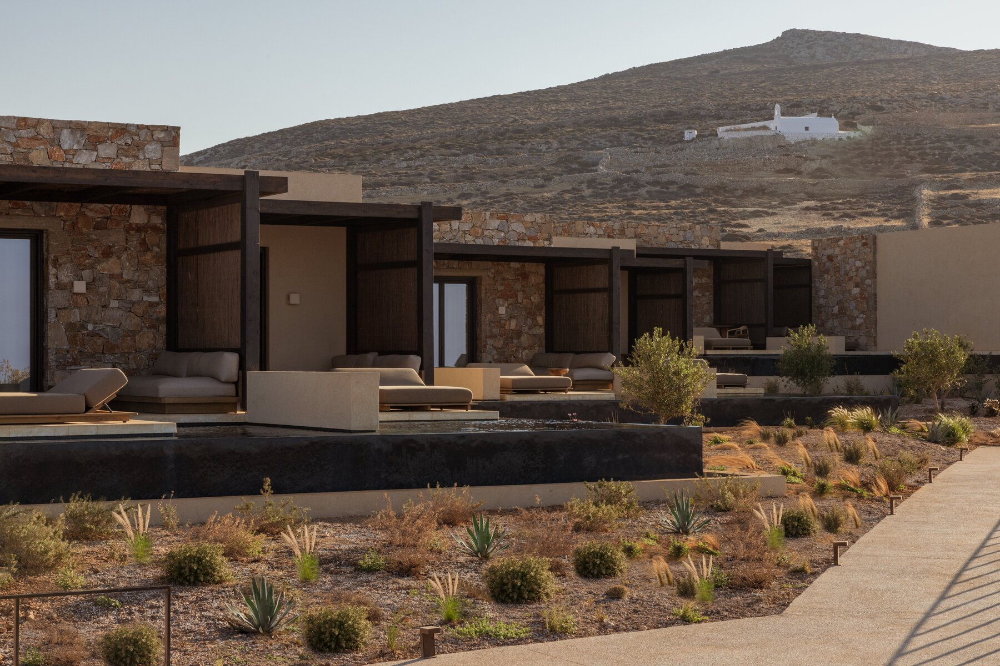
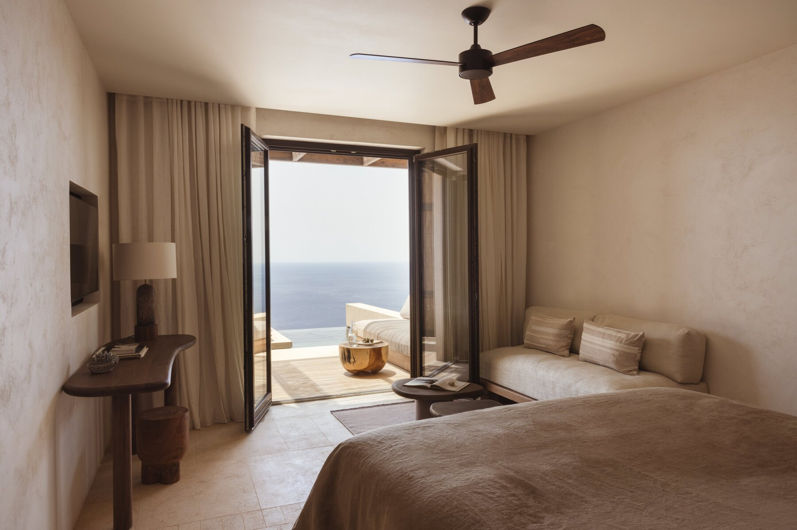
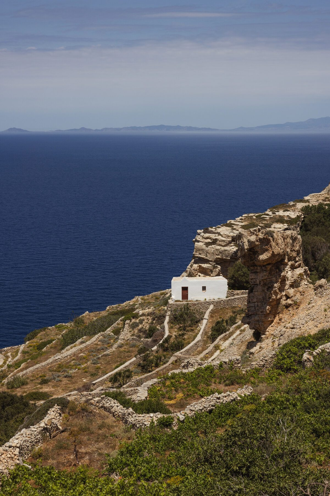

The Greece Collection · Issue No. 01
02Dramatic cliffs. Unhurried luxury. The Greece you'll never rush.
The island's most iconic viewpoint.
Long evenings in one of the Cyclades' most beautiful villages.
A secluded beach only accessible by boat or hike.
One of Greece's most remarkable luxury retreats.
Renting a car or ATV is the easiest way to explore Folegandros. Distances are short, and having your own vehicle makes it easy to discover secluded beaches, traditional villages, and scenic viewpoints at your own pace. To get to and from Folegandros itself, I also arrange private boat transfers and private helicopter transfers through my partnership with Hoper.
Folegandros reminds me why I fell in love with the Greek islands in the first place. There are no crowds to chase, no rushed itineraries to follow, and no pressure to do more. Days revolve around slow breakfasts, afternoons by the sea, and sunsets that feel surprisingly personal. If Santorini is the Cyclades' icon, Folegandros is its quiet masterpiece.
The island's charming capital, filled with whitewashed alleyways, lively tavernas, and unforgettable sunsets.
A relaxed seaside village with easy beach access and waterfront dining.
For travelers seeking complete privacy, world-class design, and one of the most exclusive luxury stays in Greece.

The art of escape
Perched high above the cliffs of Folegandros, Gundari feels less like a hotel and more like a private sanctuary. The architecture disappears into the landscape, allowing the island's rugged beauty to take center stage. Suites are thoughtfully positioned to maximize privacy, uninterrupted views, and a slower pace of travel that perfectly reflects the spirit of Folegandros.
Leave time for the spa. The wellness experience is one of the property's most underrated highlights.
Traveling with a group or a family? Inquire with the property about one of their larger villas that's more suitable for larger groups.
Don't feel pressured to explore every corner of the island. Gundari is one of those rare hotels where staying in becomes part of the experience.
Gundari is one of the most thoughtfully designed hotels I've visited in Greece. It captures everything that makes Folegandros so special: dramatic landscapes, “raw” luxury, and a genuine sense of escape. If you're looking for a destination where the hotel becomes the experience, this is it.

How I'd spend three unforgettable days on one of Greece's most peaceful islands.

Check into your hotel and let the pace of the island take over. Spend the afternoon relaxing by your private pool before watching the sun sink into the Aegean. End the evening with dinner overlooking the cliffs and settle into the slower rhythm that defines Folegandros.
Wake slowly before wandering the whitewashed alleyways of Chora. Browse local boutiques, grab a gyro from Griglia and spend the afternoon swimming at Agali or Katergo Beach. Finish the day with sunset from the Church of Panagia before another relaxed evening in Chora.
Enjoy breakfast overlooking the sea before exploring Ano Meria, the island's traditional farming village. Spend your final afternoon reading by the pool, booking a spa treatment, or simply taking in the uninterrupted views before one last dinner beneath the stars.
Don't overplan Folegandros. The island is at its best when you leave room for long lunches, slow afternoons, and spontaneous moments.